Alterações no oceano devidas à interacção com a atmosfera
Oceano absorve cerca de 30% do CO2 da atmosfera
Aumento das emissões de dióxido de carbono (CO2) na atmosfera
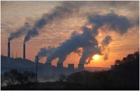
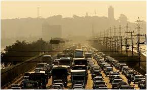
- Pré-industrial (antes de 1760): 280
- Em 2000: 368
- Previsão para fim séc. XXI: 800
Concentração de CO2 na atmosfera (Unidades: partes por milhão em volume)
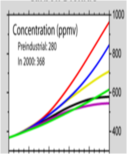
Concentrações para diferentes cenários de emissões de CO2 (IPCC – intergovernamental panel for climate change)
Aumento da concentração em dióxido de carbono (CO2) na atmosfera provoca a acidificação da água do mar
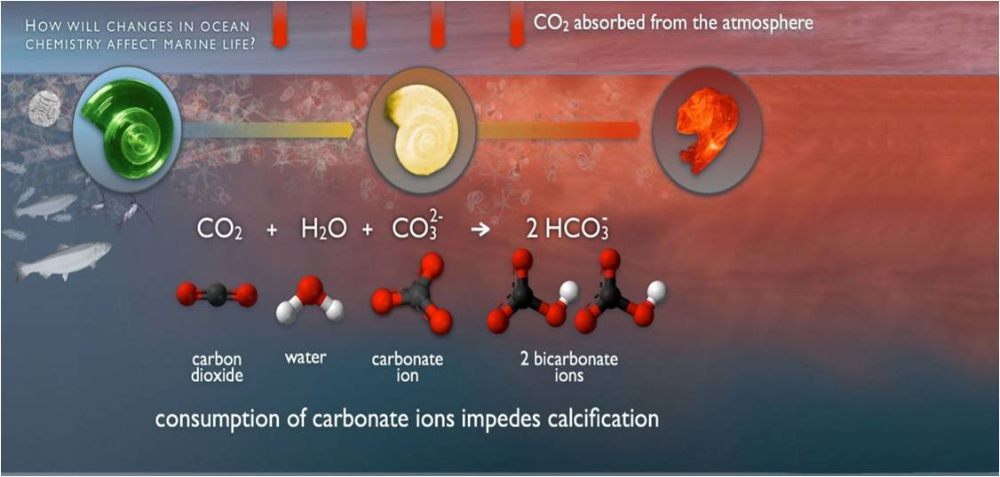
Dióxido + Água + Ião 2 Iões Bicarbonato de Carbono Carbonato
Consumo de iões carbonato dificulta a calcificação
Desde a revolução industrial (1760 - …) a superfície do oceano já está ~30% mais ácida
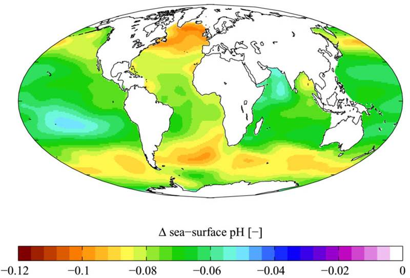
No fim do séc. Xxi, os cenários apontam para um aumento na acidez de 100-150% !!!
Efeitos da acidificação do Oceano
Organismos marinhos calcificadores usam as várias formas de carbonato de cálcio para construir as membranas das células, as conchas ou os esqueletos
A acidificação crescente pode tornar impossível este processo em muitos organismos marinhos.
Exemplos
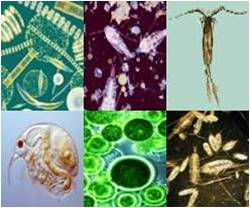
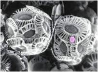
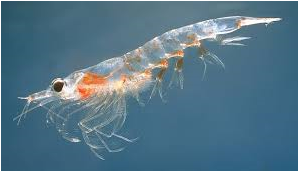
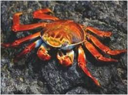
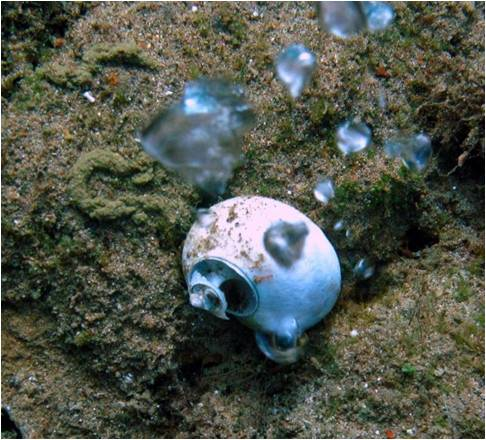
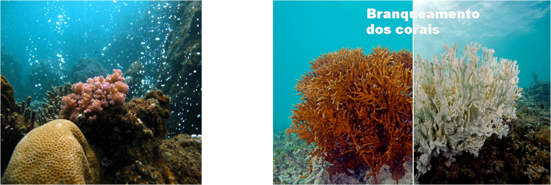
O Pterópoda (alguns mm a 1-2 cm) é alimento de organismos desde o krill até às baleias
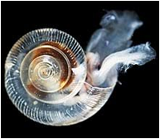
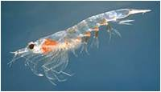
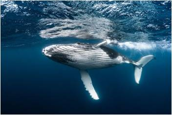
Experiência em laboratório (EUA) Concha de Pterópoda a dissolver-se em cerca de 45 dias quando colocada em água do mar com a acidez prevista para 2100
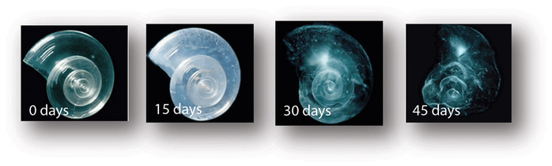